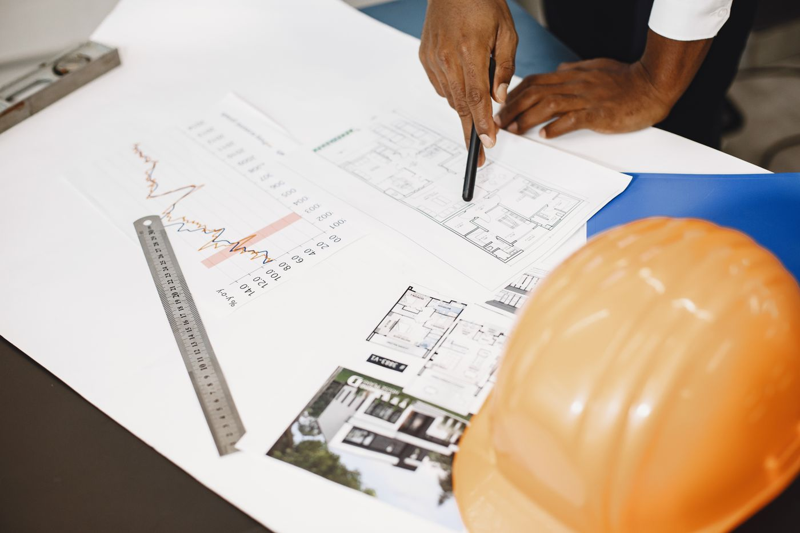
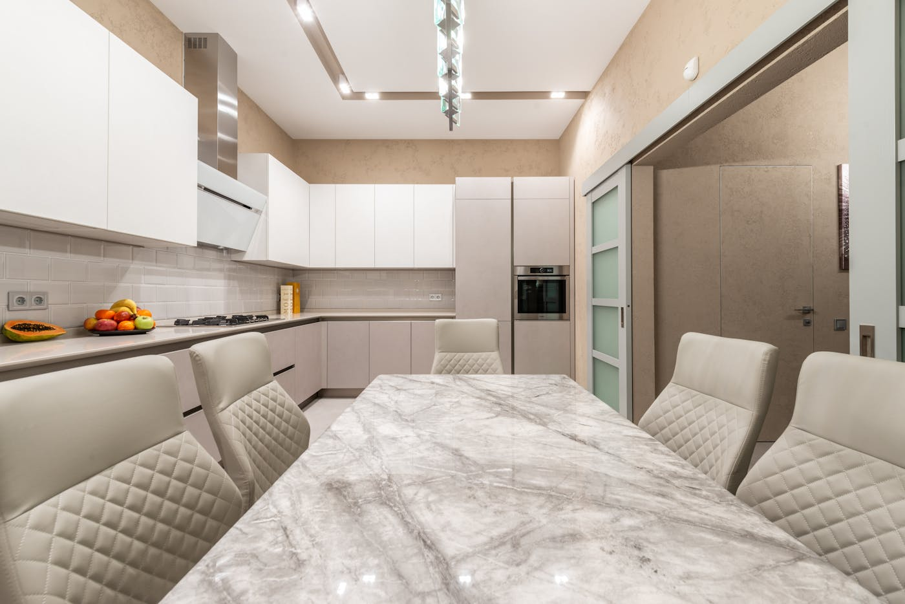
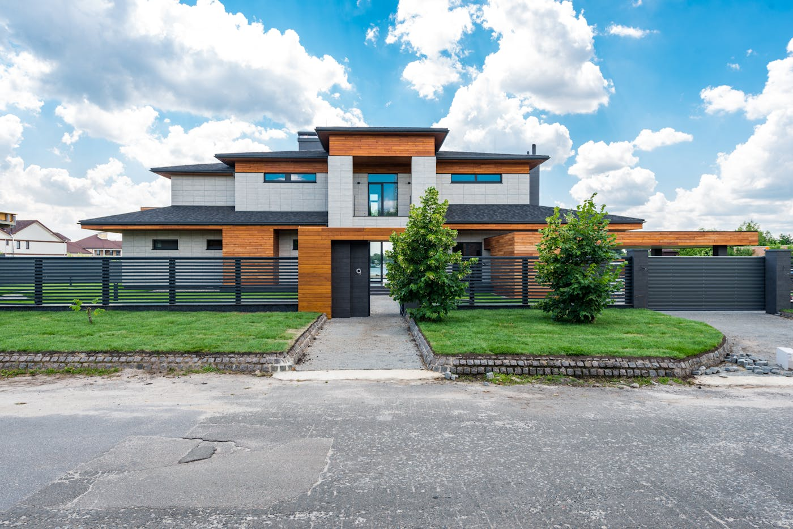

Quick answer: A design consultant in residential construction manages the design of your home from first brief through to council-ready documentation. In Sydney, full-service design and documentation fees run $60,000–$120,000 for a custom home project. Whether you need one depends on your site and brief: a standard project home on a flat block rarely requires one; a custom home on a complex site almost always does. Design consultants may hold architectural or building designer licences, or work in an advisory capacity alongside a licensed professional.
“Design consultant” has become, in the home building industry, something like “artisanal” on a supermarket shelf — it means roughly what the person using it wants it to mean, and occasionally involves a tasteful rebrand. You will find the term applied to people who help you select kitchen tapware and to people who manage the entire design documentation for a $3M custom home.
[Right. Straight face now.] This guide covers the substantive version: what a design consultant in residential construction actually does, what it costs in Sydney in 2026, and when hiring one is the right decision.
- What is a design consultant?
- Design consultant vs architect vs building designer
- The step-by-step design process
- What a design consultant costs in Sydney in 2026
- Council approvals and the NSW planning framework
- Materials, finishes and specification
- Design consultation inside a custom build
- When NOT to hire a design consultant
- Six questions to ask your design consultant
- FAQ
What Is a Design Consultant in the Home Building Context?
In residential construction, a design consultant is a professional who guides the design process for a home build or renovation — from initial brief through to drawings ready for council submission or construction. The role sits between the client and the technical specialists: the architect, building designer, structural engineer, and builder.
The specific scope varies. A design consultant engaged early shapes the brief, assesses the site’s constraints and opportunities, and produces concept drawings for client review. One engaged later may review plans already prepared by a licensed designer and advise on buildability, cost, or spatial quality. The common thread is translating client intent into design decisions — and ensuring those decisions are traceable when they reach a builder or certifier.
In NSW, design practitioners who produce regulated designs for Class 2–9 buildings must be registered under the Design and Building Practitioners Act 2020. For Class 1 buildings — detached homes and duplexes — a licensed building designer or registered architect prepares and signs the plans. The advisory title “design consultant” may sit over either of those licences, or alongside them.
Design Consultant vs Architect vs Building Designer

Photo via Pexels
The title matters less than the licence and the scope of work. A quick map of the three roles:
Architect
Registered with the NSW Architects Registration Board (ARASB). Fees are higher. Best suited to complex, architecturally demanding projects where design is a primary driver of value. Required for certain project types and complexity levels that exceed residential scope.
Building Designer
Licensed under the NSW Home Building Act to prepare residential building plans. Typically more cost-effective for standard residential projects. Many building designers produce excellent, fully compliant designs — the fee advantage over full architectural services on a single custom home is often $40,000–$80,000.
Design Consultant
Not a regulated title in NSW. May be an architect, building designer, or a specialist in interior design or project management providing advisory input on the design process. The scope of their engagement — not their title — determines whether they need a specific licence to deliver the work.
For a custom home, you need either an architect or licensed building designer to sign the regulated drawings. A design consultant working outside those registrations can advise but cannot prepare the construction documents. Verify any practitioner’s licence on the NSW Fair Trading register before engaging them.
The Step-by-Step Design Process
The design process for a Sydney custom home typically follows this sequence. The design consultant’s involvement spans every stage — though in practice, scope and fee are often split by stage.
Site Assessment
Before any design begins, the consultant reviews your lot: dimensions, orientation, slope, soil class, surrounding development, and council zoning. This determines what can be built, how the building should respond to the site for natural light and cross-ventilation, and which approval path applies.
Brief Development
A thorough brief covers room requirements, spatial relationships, style direction, budget parameters, and non-negotiables. A poorly developed brief is the most common source of costly late-stage changes. The design consultant’s job here is to surface the decisions that need to be made early — not to defer them until construction documentation.
Concept Design
Initial floor plan arrangements, elevations, and key spatial relationships. Not a construction drawing — a decision-making tool for resolving how the home is organised before money is spent on detailed documentation.
Schematic Design
The approved concept is developed in greater detail. External materials, key interior elements, and structural approach are resolved. This is where a design consultant with construction knowledge adds particular value: decisions made at schematic design become expensive to reverse at DA stage.
Documentation for Approval
The design is documented to the standard required for a Development Application (DA) or Complying Development Certificate (CDC) — floor plans, elevations, sections, and the supporting reports required by the relevant council or certifier.
Consultant Coordination
A custom home requires input from structural engineers, hydraulics consultants, energy assessors, landscape designers, and sometimes heritage or acoustic specialists. The design consultant coordinates these inputs and integrates them into the documentation package. Clients who manage this coordination themselves routinely underestimate the time it takes.
Construction Documentation
After approval, drawings are developed to the level required for a builder to price and construct the home. Specification — the precise selection of tiles, joinery, fittings, and fixtures — is locked in at this stage. This is often where design decisions made casually have a large cost impact.
What a Design Consultant Costs in Sydney in 2026

Photo via Pexels
Fee structures vary by practice and scope. The main models:
| Service | Typical Sydney fee (2026) |
|---|---|
| Initial site consultation only | $500–$2,000 |
| Concept design | $5,000–$20,000 |
| DA or CDC documentation package | $25,000–$60,000 |
| Full design through to construction documentation | $60,000–$120,000 |
| Full architectural services (% of build) | 8–15% of construction cost |
Hourly rates run $150–$350 per hour for a building designer; $250–$500 or more per hour for a registered architect. Hourly arrangements are most common for single consultations or feasibility assessments.
Additional professional costs on top of design fees:
- Structural engineering: $8,000–$20,000
- Energy assessment (NatHERS or similar): $1,500–$5,000
- Land surveying: $3,000–$8,000
- Council contributions (Section 7.11 or equivalent): $20,000–$60,000 depending on LGA and project value
On a well-specified Sydney custom home, total design and approval costs — excluding construction — typically run $100,000–$180,000. That figure surprises people who started with a per-m² construction estimate on a spreadsheet. It should not surprise you.
Council Approvals and the NSW Planning Framework
Residential projects in NSW follow one of two approval paths, and the right choice depends on the site and the design.
Complying Development Certificate (CDC): Issued by a private certifier when the design meets all numerical standards under the Housing SEPP — setbacks, height, floor space ratio, site coverage. Turnaround is approximately 20 business days. Not all sites or designs qualify: corner lots, irregular boundaries, bushfire-prone land, and sites with heritage overlays often fall outside CDC criteria.
Development Application (DA): Assessed by the relevant council when CDC criteria are not met. Timelines vary by local government area — typically 60–120 days for a standard residential DA in Parramatta or Hornsby, and up to 6–12 months in more congested LGAs.
A design consultant who understands the NSW Planning Portal, local LEPs, and the Housing SEPP can determine which approval path your project qualifies for before design is committed. Getting this wrong costs months and money: designing for CDC eligibility on a site that does not qualify, or submitting a DA without required supporting documentation, extends the programme in ways that are hard to recover.
For multi-dwelling projects — duplexes and small-lot townhouses — the Low and Medium Density Housing Code and local DCPs introduce additional controls around minimum lot sizes, setbacks, and landscaping requirements. See our guide to duplex builders in Sydney for a detailed breakdown of how these controls affect project feasibility.
Materials, Finishes and Specification: Where the Design Consultant Earns Their Fee

Photo via Pexels
The specification process — deciding exactly what goes into the house — is where most clients feel the presence or absence of good design consultation most directly.
Stone benchtops across all bathroom vanities instead of engineered stone adds $15,000–$40,000 to a typical custom build. Custom joinery versus semi-custom adds similar amounts. A heated floor in the master bathroom, upgraded glazing, acoustic specification between floors — each decision stacks. A design consultant who tracks the cost implications of specification choices can flag when selections are moving the project beyond the budget envelope, before the builder prices it at tender.
The alternative — making specification decisions under time pressure, without a coherent design direction to anchor them — produces homes where the kitchen reads differently from the living room and the bathrooms look like a showroom floor with no editorial hand. The consequence of poor specification is not only additional cost but incoherence.
A good design consultant brings an ordered approach: establish the design direction first at schematic stage, then select finishes that cohere with it, within the agreed budget. Changes to that direction at construction documentation stage are where costs escalate. Variation clauses in building contracts exist precisely because this happens more than it should.
For a detailed look at how custom home builds are structured and priced, see our guide to building a new home in Sydney.
Design Consultation Inside a Custom Build
At TURYN, design input begins at the first site visit. A home designed without understanding how it will be built tends to be harder and more expensive to construct. Builder involvement at the design stage — on structure, site access, sequencing, and material availability — prevents the scenario where a well-designed home arrives at tender with a construction cost 35–40% above the client’s budget. Our build process is structured to involve design review at every stage before work on the next stage begins.
Some clients arrive with an architect’s drawings ready. TURYN builds to those plans. Others prefer a builder involved from concept — contributing to site response, structural choices, and cost at each design stage. Either path works. The important condition is that the builder and the design team are communicating throughout the documentation process, not meeting for the first time at tender pricing. Our portfolio includes projects across both paths.
This integration matters most on challenging Sydney sites: steep blocks, narrow lots, flood-affected land, sites with heritage overlay or significant tree constraints. A design consultant who has built on these sites — not just drawn for them — brings advice grounded in what actually happens during construction, not only what the plans show.
If you are choosing between custom builders for your Sydney project, the criteria in our guide to how to choose a custom home builder apply equally to evaluating your design team. The questions are largely the same: who will actually be doing the work, what does the portfolio show about comparable projects, and how are variations and scope changes managed.
For clients on the North Shore, our post on custom home builders on the North Shore covers how design consultants interact with the specific planning controls across Ku-ring-gai, Lane Cove, and Willoughby LGAs. Council controls in those areas have particular implications for floor space ratio, tree preservation, and heritage overlay — all of which affect what a design consultant needs to navigate.
When NOT to Hire a Design Consultant
This section is the one most guides skip. We are not most guides.
Do not hire a dedicated design consultant if you are building a standard project home on a flat, uncomplicated block. The volume builder’s in-house team manages the process, the plans are pre-approved for many configurations, and the approval path is optimised for speed. An independent design consultant on top of that structure adds cost without a commensurate return.
Do not hire one if your brief is simple and your lot presents no unusual constraints. A rear extension on a structurally sound, standard suburban home can be handled efficiently by a licensed building designer working directly with your builder. Full design consultancy is not the right tool for a confined scope.
Do not hire one if your budget is under $600,000 for construction. Below this threshold, design consultation fees represent a significant share of the total project cost, and the margins required to fund a fully custom process compress to a point where something gives. The project home route is more honest about the constraints at that price point.
Do not hire one if you are unwilling to be involved in the design process yourself. Design consultation requires decisions — many of them, often under time pressure. Clients who defer all decisions and then revise them at construction documentation stage create the most expensive kind of variation: the kind that requires redrawing work already signed off. The engagement works when the client is actively engaged, not just available.
Six Questions to Ask Your Design Consultant
Do this homework before the first meeting — not after three good conversations and an emotional attachment to the early renders.
- Are you a registered architect or licensed building designer in NSW? The answer determines what they can sign and what they can legally deliver. Verify the licence on the NSW Fair Trading register before the second meeting.
- Can you show me three completed projects in a comparable size and specification range? Portfolio is the primary evidence of competence. A strong portfolio of apartment refurbishments is not the same as experience with custom residential from DA through to handover.
- How do you charge, and what is included at each stage? A clear, itemised fee schedule from concept through to construction documentation is the only basis for comparing proposals. A flat fee with clear deliverables is preferable to an open-ended hourly arrangement on an undefined scope.
- Do you coordinate the structural and other technical consultants, or is that my responsibility? On a well-run engagement, the design consultant manages the consultant team. On a poorly defined one, the client ends up coordinating engineers, surveyors, and certifiers independently.
- How are scope changes managed, and how are variations priced? Design changes after a stage is formally completed are a major source of additional cost. Ask for the variation procedure in writing before you sign. Changes should be priced before work proceeds — not reconciled at the end.
- Who will I deal with day to day — the principal or a junior? Know who is designing your home. A principal who pitches the project and then hands it to a graduate is a common source of dissatisfaction. Ask the question directly, then confirm the answer in the appointment letter.
Six questions. Not unreasonable for an engagement that may represent $100,000 or more of your project cost, before a slab of concrete is poured.
FAQ
What does a design consultant do for a home build?
A design consultant manages the design process from site assessment and brief development through concept design, council approval documentation, consultant coordination, and construction documentation. The role ensures your design is buildable, compliant with council controls, and coherent as a finished home. In practice, the scope of engagement varies — some clients engage a consultant for the full journey, others for a specific stage such as concept design or specification review.
How much does a design consultant cost in Sydney?
A full-service design consultant in Sydney charges $60,000–$120,000 for design and documentation of a custom home. Concept-only engagements run $5,000–$20,000. Hourly rates for a building designer are $150–$350 per hour; a registered architect charges $250–$500 or more per hour. Some practices charge a percentage of construction cost, typically 8–15%. These figures cover professional design fees only — structural engineering, surveying, and council fees are additional.
What is the difference between a design consultant and an architect?
An architect is registered with the NSW Architects Registration Board and can certify designs for a broader range of project types and complexity levels. A design consultant is not a regulated title in NSW and may be an architect, a licensed building designer, or another specialist. For standard residential projects, a licensed building designer can prepare compliant plans without full architectural services — and typically for lower fees. The right choice depends on the complexity of the project.
Do I need a design consultant to build a custom home in NSW?
You need either a registered architect or licensed building designer to prepare the plans — that is a regulatory requirement. Whether you also engage a design consultant in a broader advisory capacity depends on the complexity of your site and brief. A standard project home on a flat block does not require one. A custom home on a challenging site — complex zoning, significant slope, heritage overlay — benefits from design consultation from the earliest stage of the project.
What is the difference between a building designer and a design consultant?
A building designer is licensed under the NSW Home Building Act to prepare residential building plans and sign regulated drawings. A design consultant is an advisory role that may be performed by a building designer, a registered architect, or a specialist in a related field. In practice, many building designers also act as design consultants for their residential clients — the distinction is often one of scope and fee structure rather than person.
How long does the design consultation process take?
Site assessment and brief development typically takes two to four weeks. Concept design runs four to eight weeks. Full design and documentation for a DA-path custom home takes three to five months. Construction documentation, after approval, runs a further two to three months. Total elapsed time from first meeting to drawings ready for builder tender: five to nine months. This assumes no significant changes of direction between stages — late brief revisions compress these timelines in the wrong direction.
Can a design consultant help with council approvals in NSW?
Yes. A design consultant familiar with NSW planning controls — local LEPs, the Housing SEPP, and the difference between DA and CDC approval paths — can assess which route applies to your site and design the project to meet those standards. Getting this wrong at design stage is expensive: a CDC-ineligible design submitted as complying development, or a DA missing key supporting documents, can add months to the programme and require paid design revisions to resolve.